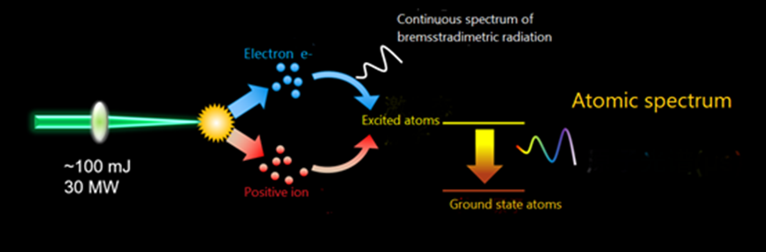
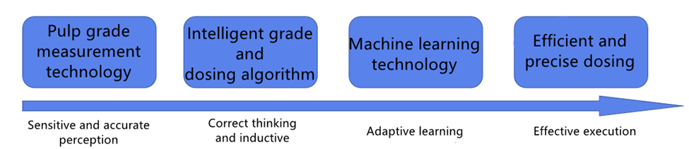
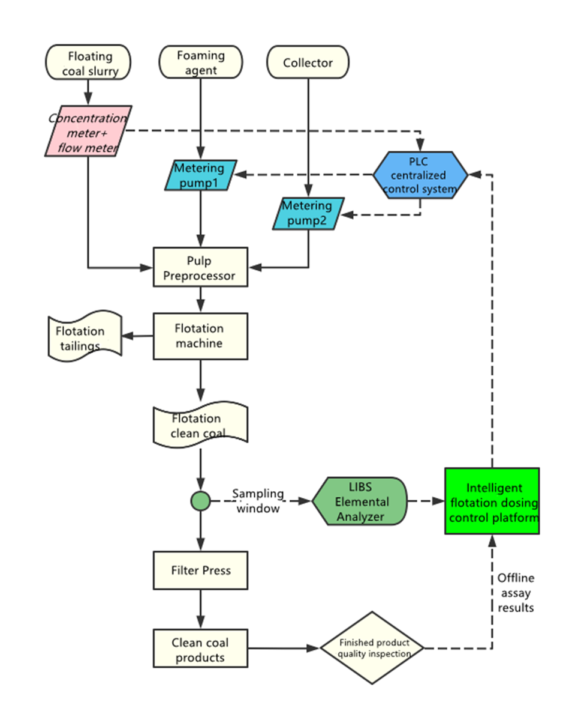

For example:
Real-time elemental analysis
Real-time elemental analysis is the foundation of intelligent flotation.
Laser-Induced Breakdown Spectroscopy (LIBS) technology is an emerging technology for mineral element analysis (originally used in Mars rovers).

Mars Rover Exploration and Spectrum Analysis
- Solution
Technical Principle of the solution: Excited-state atoms (i.e., ions) have a one-to-one correspondence with atomic spectra and can be used for element identification.

Ion-Induced Excitation Principle

Measurement Principle
The technology is now applied to real-time slurry grade detection, as follows:

Real-time Detection Scheme
- Technical Route:
1. The LIBS elemental analyzer obtains the grade through a sampling window on the pipeline and transmits it to the intelligent flotation reagent control platform.
2. The PLC centralized control system obtains the concentration and flow rate of the incoming ore slurry through density and flow meters, calculates the slurry volume, and transmits it to the intelligent flotation reagent control platform.
3. The intelligent flotation reagent control platform, using big data and artificial intelligence technology, analyzes the appropriate reagent dosage and sends control signals to the PLC centralized control system.
4. The PLC centralized control system receives the reagent dosage signal and adjusts various parameters, such as frother flow rate for flotation.
5. The original offline assay results from the laboratory are used to periodically calibrate the accuracy of the elemental analyzer's measurements.

Intelligent Coal Flotation Process Flowchart (Example for Coal Preparation Plant)
- Salt Lake Lithium Solution:
LIBS Technology is an advanced elemental content measurement technology that can be used for
component monitoring in solid, liquid, and gas samples. It features non-destructiveness, no sample
preparation, online measurement, a wide dynamic range, and high precision. In lithium chloride brine,
the content of lithium chloride is very low, often ranging from hundreds to over a thousand ppm. Lithium
is the third element on the periodic table, with few outer electrons (highly reactive) and a small nucleus,
making it difficult to resonate with X-rays and gamma rays. However, it is easily excited to generate
plasma by laser. Therefore, LIBS technology is almost the best choice for online monitoring of lithium
chloride brine grade.
Technical Route:
For lithium chloride brine grade monitoring, optical windows can be directly opened on the conveying pipeline to directly measure the liquid inside the pipeline using LIBS.
On representative conveying pipelines in the brine refining process, a branch line is set up for measurements, with additional control valves, booster pumps, and flow meters to ensure consistency with the main pipeline flow, ensuring the "constant speed sampling" principle. The branch line is square in shape and equipped with sapphire or quartz windows for LIBS measurements. By simultaneously measuring the proportions of Li, Mg, K, Na, and H elements, the Li concentration in the brine can be provided, as well as parameters such as Mg/Li and K/Li. LIBS laser uses high-energy dual-pulse second harmonic wavelength laser to enhance excitation intensity, reduce detection limits, and reduce the influence of water matrix effects. A patented "compound eye" plasma spectral reception design greatly increases the system's light intake. The spectrometer is designed in segments, covering a wavelength range of 250-800 nm, with a resolution better than 0.1 nm, providing high detection limits.
- Equipment Advantages:
• High degree of automation and intelligence, computerized control of sampling, measurement analysis, daily sampling, and data processing.
• Stable and reliable data analysis.
• Safe and environmentally friendly, no radioactive sources, no need for approval from environmental protection authorities.
• Convenient operation and maintenance, modular design, high integration of functions, small size, and easy operation and maintenance.
- Economic Benefits & Technical Indicators:
- Coal Mining
• When producing 2# clean coal, the ash content of the floating concentrate is <9.5%, with a stability rate of over 90%. When producing 5# clean coal, the ash content of the floating concentrate is <15%, with a stability rate of over 95%.
• When producing 2# clean coal, the floating concentrate extraction rate increases by 0.5%. When producing 5# clean coal, the floating concentrate extraction rate increases by 1%.
• Reagent consumption reduced by 20%.
• With 2 million tons per annum (Mt/a) production and 10% flotation input (raw coal slurry plus secondary coal slurry), the average increase in flotation recovery rate is 1%, resulting in an annual additional recovery of 1,980 tons of clean coal. The net price of clean coal is calculated at 1,050 yuan per ton, resulting in an economic benefit of 2.08 million yuan per year. Adding the benefit of reduced reagent consumption at 400,000 yuan per year, the project benefit is 2.48 million yuan per year.
• Reduced flotation, sampling, sample preparation, and assay personnel, reducing labor costs.
- Salt Lake Lithium
• LiCl detection limit: 6 mg/L.
• LiCl concentration measurement accuracy: ±10 mg/L @ 1000 mg/L.
• Measurable parameters: LiCl, MgCl, KCl, NaCl concentration, and Mg/Li, K/Li, etc.
• Reduced flotation, sampling, sample preparation, and assay personnel, reducing labor costs.
• Provides analysis results every minute, or calculates results for any desired time and time interval based on user needs.
- Other Metal Ores (Not Detailed)